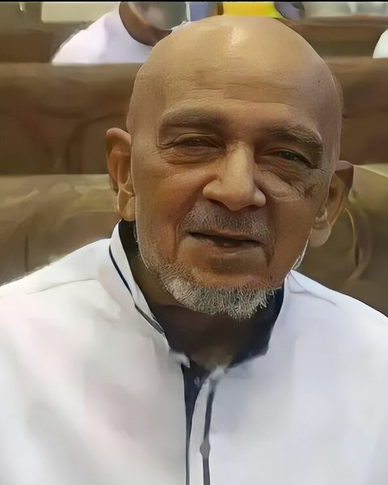
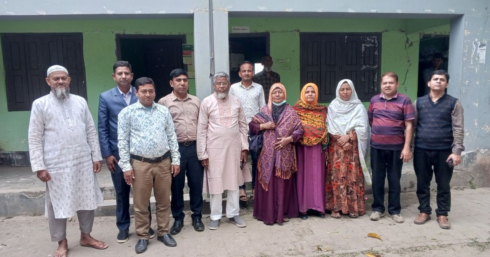
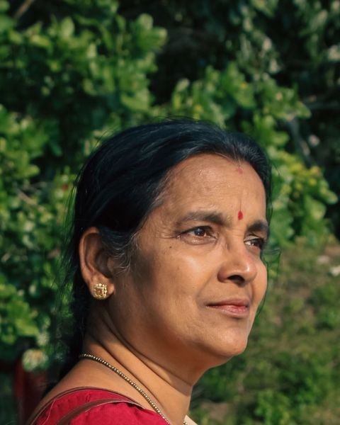
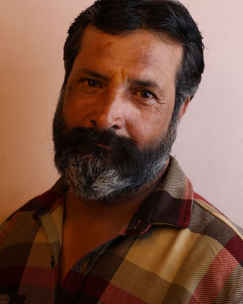
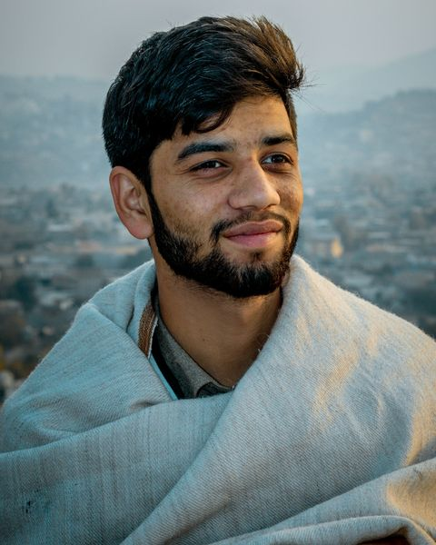
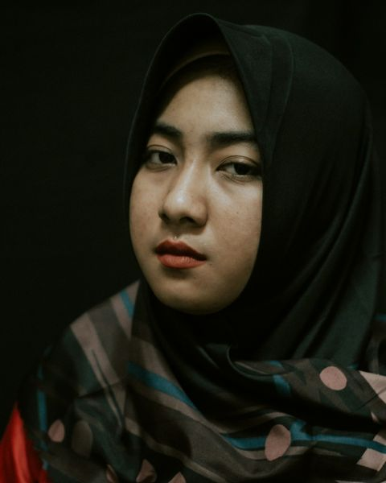

অভিজ্ঞ আর আন্তরিক শিক্ষকমণ্ডলী।
আমাদের শিক্ষকরা গড়ে ১১ বছর ধরে এখানে পড়াচ্ছেন। ক্লাসের বাইরেও প্রত্যেকে কোনো না কোনো ক্লাব, খেলা বা সহশিক্ষা কার্যক্রমের দায়িত্বে আছেন।
প্রতিষ্ঠান প্রধান
যাঁরা স্কুলটা পরিচালনা করেন
শিক্ষকবৃন্দ




প্রশাসন · বাংলা
রেহানা পারভীন
সহকারী প্রধান শিক্ষক · এম.এ (বাংলা), বি.এডপ্রতিদিনের পড়াশোনা, ক্লাস রুটিন আর পরীক্ষার দেখভাল করেন। এখনো নবম-দশম শ্রেণিতে বাংলা পড়ান।
২০০৪ সাল থেকে এই স্কুলে
বিজ্ঞান · পদার্থবিজ্ঞান
মোঃ রফিকুল ইসলাম
সিনিয়র শিক্ষক · এম.এসসি (পদার্থবিজ্ঞান), বি.এডবিজ্ঞান বিভাগের প্রধান। বিজ্ঞান ক্লাবের উপদেষ্টা — তাঁর হাত ধরে স্কুল তিনবার জেলা বিজ্ঞান মেলায় প্রথম হয়েছে।
২০০৯ সাল থেকে এই স্কুলে
বিজ্ঞান · জীববিজ্ঞান
ফারহানা আক্তার
সহকারী শিক্ষক · এম.এসসি (প্রাণিবিদ্যা), বি.এডজীববিজ্ঞান পড়ান। স্কুলের সবুজ ক্যাম্পাস আর গাছ লাগানো কর্মসূচির দায়িত্বে আছেন।
২০১৫ সাল থেকে এই স্কুলে
বিজ্ঞান · রসায়ন
সুব্রত কুমার দাস
সহকারী শিক্ষক · এম.এসসি (রসায়ন)রসায়ন পড়ান। বিজ্ঞানাগারের নিরাপত্তা আর ব্যবহারিক ক্লাসের দায়িত্বও তাঁর।
২০২০ সাল থেকে এই স্কুলে
বিজ্ঞান · আইসিটি
মাহমুদুল হাসান
সহকারী শিক্ষক · বি.এসসি (সিএসই)আইসিটি পড়ান। কম্পিউটার ল্যাব আর স্কুলের ওয়েবসাইট দেখাশোনা করেন।
২০২০ সাল থেকে এই স্কুলে
গণিত
তানভীর আহমেদ
সিনিয়র শিক্ষক · এম.এসসি (গণিত), বি.এডগণিত পড়ান। গণিত অলিম্পিয়াড দলের কোচ — ২০২০ সাল থেকে দলটা তিনবার বিভাগীয় পর্বে পুরস্কার পেয়েছে।
২০১১ সাল থেকে এই স্কুলে
উচ্চতর গণিত
শাহীন আলম
সহকারী শিক্ষক · এম.এসসি (গণিত)উচ্চতর গণিত পড়ান। বাস্তব জীবনের উদাহরণ দিয়ে অঙ্ক বোঝাতে তাঁর জুড়ি নেই।
২০২১ সাল থেকে এই স্কুলে
মানবিক
সাবিনা ইয়াসমিন
সিনিয়র শিক্ষক · এম.এ (ইতিহাস), বি.এডবাংলাদেশ ও বিশ্বপরিচয় আর ইতিহাস পড়ান। বিতর্ক ক্লাবের কোচ।
২০১২ সাল থেকে এই স্কুলে
ধর্ম ও নৈতিক শিক্ষা
আবু তাহের
সিনিয়র শিক্ষক · কামিল (হাদিস), বি.এডইসলাম ও নৈতিক শিক্ষা পড়ান। শিক্ষার্থীদের কাউন্সেলিংয়েও সময় দেন।
২০১১ সাল থেকে এই স্কুলে
ব্যবসায় শিক্ষা · হিসাববিজ্ঞান
দীপক কুমার সরকার
সহকারী শিক্ষক · এম.কম (হিসাববিজ্ঞান)হিসাববিজ্ঞান পড়ান। ব্যবসায় শিক্ষা শাখার শিক্ষার্থীদের হাতে-কলমে হিসাব রাখা শেখান।
২০১৬ সাল থেকে এই স্কুলে
ব্যবসায় শিক্ষা · ব্যবসায় উদ্যোগ
কামরুল হাসান
সহকারী শিক্ষক · এমবিএ (ফিন্যান্স)ব্যবসায় উদ্যোগ আর ফিন্যান্স পড়ান। প্রতি বছর স্কুলের "উদ্যোক্তা মেলা" তিনিই আয়োজন করেন।
২০১৮ সাল থেকে এই স্কুলে
ভাষা · বাংলা
নাসিমা বেগম
সিনিয়র শিক্ষক · এম.এ (বাংলা), বি.এডবাংলা পড়ান। স্কুলের বার্ষিক ম্যাগাজিন "আলোর পথে" সম্পাদনা করেন — এবার বের হচ্ছে ১৪তম সংখ্যা।
২০১৩ সাল থেকে এই স্কুলে
ভাষা · ইংরেজি
আব্দুল্লাহ আল মামুন
সহকারী শিক্ষক · এম.এ (ইংরেজি)ইংরেজি পড়ান। ইংলিশ ক্লাব আর স্পোকেন ইংলিশ সেশন চালান।
২০১৯ সাল থেকে এই স্কুলে
সহশিক্ষা · চারু ও কারুকলা
অনিমেষ রায়
সহকারী শিক্ষক · বিএফএ (চারুকলা)চারু ও কারুকলা পড়ান। সাংস্কৃতিক অনুষ্ঠান আর দেয়াল পত্রিকার দায়িত্বে আছেন।
২০১৪ সাল থেকে এই স্কুলে
সহশিক্ষা · শারীরিক শিক্ষা
জাহিদুল ইসলাম
শরীরচর্চা শিক্ষক · বিপিএডশারীরিক শিক্ষার শিক্ষক। ফুটবল আর ক্রিকেট দল, সাথে বার্ষিক ক্রীড়া প্রতিযোগিতা — সবই তাঁর দেখভালে।
২০১৭ সাল থেকে এই স্কুলে